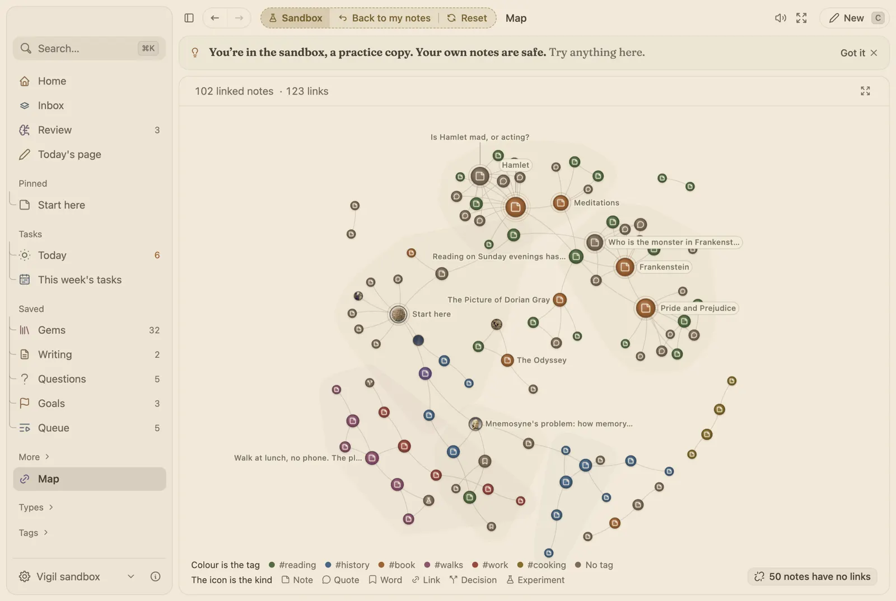

See which notes lean on which.
Every note you have linked, drawn as dots joined by lines. Type @ in a note to link another, and both show up on the Map.

How it works
- Colour is the tag, the icon is the kind. A #book note and a #work note never look alike, and the key says which is which.
- The busy ones are named. The six notes with the most links always carry their names, so you can find the middle of a subject.
- Links both ways. A note shows what links to it, so a thought written last year turns up beside the one you wrote today.